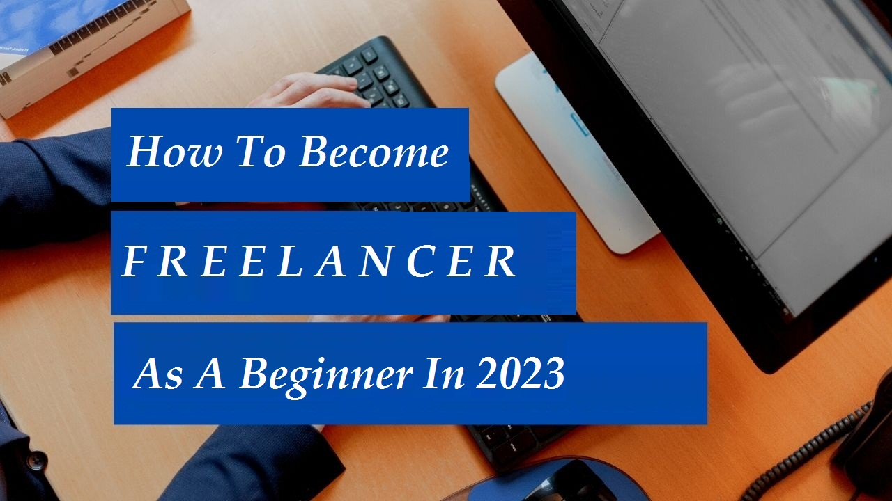

How To Start Freelancing As A Beginner in 2023

Freelancing offers a unique level of freedom & flexibility if compared to traditional employment techniques. Freelancers have the ability to choose the projects and clients they work with, as well as the freedom to set their own schedules and work from anywhere. This independence can be very rewarding, but it also requires a high level of self-motivation and discipline to be successful. So, What actually freelancing is?, How can someone start freelancing? How can a person with zero knowledge on freelancing acquire this field?, Is online freelancing legit?, Can I earn from Freelancing?
In this blog post, we'll be answering all the major queries mentioned above related to freelancing. So, stay tuned with us & note the important points that can change your thinking perspective to become a full time freelancer.
Want To Earn Passive Income Working Online From Home?
Click Here→ 7 Easy Ways To Make Money Online
Table of Content
- What is Freelancing?
- Online and Offline Freelancing
- How to start Freelancing as a beginner?
- Most popular freelancing platforms?
- How to become freelancer on fiverr?
- How to become freelancer on Upwork?
- Which skill is best for freelancing?
- Can Freelancing Be a Career?
- Some Extra Facts About Freelancing
What is Freelancing?

Freelancing is a type of work model in which people offer their services to clients on a project-by-project basis but not being employed by a single company or boss. Freelancers are self-employed individuals who are responsible for finding their own clients, negotiating terms and rates, and managing their own finances.
In other words, Freelancers aren't bound by any sorts of traditional employment agreements & have the freedom to choose their own projects they want to work on and whenever they want. They may work from anywhere & have the ability to set their own schedules. However, Freelancing can be risky as this independence also means that freelancers are responsible for their own benefits, such as healthcare and retirement savings, and must continuously find new clients and projects to maintain a balanced source of revenue.
Online and Offline Freelancing
Freelancing can be done both online and offline. Online freelancing is done by providing services over the internet, often through a freelancing platform or directly to clients through email or a website. Whereas, Offline freelancing denotes providing services in person, rather than over the internet.
Examples of online freelancing include writing, editing, graphic design, web design and development, marketing, advertising, and consulting. Examples of offline freelancing include photography, event planning, catering, makeup artistry, and teaching.
Both Online & Offline freelancing have their own merits and demrits, In this article, we'll be covering about Online Freelancing & queires related to online freelancing.
Quick Ways To Make Money Online From Home
Click Here→ 7 Quick Ways To Make Money Online
How to start Freelancing as a beginner?

As a beginner, starting your freelancing journey can be an exciting and overwhelming experience. Yeah, it is difficult without any experience as it can an take some effort and time. In order to get started, and feel motivated to activate the brain for the freelance journey, you need to follow some of the important steps mentioned below.
-
Research and educate yourself: Research is the key to every lock. There are unlimited resources which are available online that can help you learn most of the things about freelancing that you might be unaware of. You can start by reading some articles and blogs, watching videos, or also by joining some online communities or forums. This will help you understand the basics of freelancing and what it takes to be successful. Even a professional freelancer never stops researching new ideas and generate more clients.
-
Identify your skills & expertise: One should be always aware about his/her skills and abilites before initiating any work. Think about what can be your signature skill and what can boost your self-confidence to begin as a freelancer. If you don't posses any professional skills, you can start by offering services that you are passionate about. Try to figure out the demand & supply in the market. This will help you find potential clients.
-
Erect a portfolio: To demonstrate your skills, abilites & areas of interests, you'll need a portfolio. It is an important tool for every freelancer because it helps you exhibit your work to potential clients as well stand out from other candidates. If you are a designer, you can include a variety of design works that showcase your talents. Similarly, A well-designed portfolio can attract more clients and boost your online presence as a trustworthy freelancer.
-
Try to market Yourself: One can marketing himself as a freelancer as it is important to help attract more potential clients and build businesses. One can learn about marketing techniques like social media marketing, content marketing, and email marketing to help you promote your services. If you've the dedi cation to become a freelancer, you should make your skills, portfolio stronger and bold your online presence. Create some projects, build your own websites,apps which attract your client towards you.
What are the most popular freelancing platforms?
Some of the most popular and legit freelancing platforms include Upwork, Fiverr, and Freelancer.com. The primary role of these platforms is to connect freelancers with clients who are seeking for their services, and offer a range of features such as job search tools, payments, as well support for both freelancers and clients. Not only these but there are other popular freelancing platforms like PeoplePerHour, Guru, and Toptal.
Though many such platforms provide freelancing services, the most prefered tools include upwork & fiverr. These platforms have wide range of freelancers and clients working together, and the payment process in these platforms are legit and promising.
How to become freelancer on fiverr?

To become a freelancer on Fiverr, you need to sign up for an account on the platform and create a seller profile. Here are some of the steps you can follow to get started:
- STEP 1: Open the Fiverr website and click on the (join) button in the top right corner of the screen.
- STEP 2: Now, you need to create a seller profile, sign up for an account and provide your name, email address, and choose a username and password.
- STEP 3: Add a profile picture & write a short bio to let potential clients know more about your skills and experience.
Want To Become A Professional Freelancer Using Fiverr Platform?
Click Here→ Become Fiverr Freelancer
How to become freelancer on Upwork?
Similar to Fiverr, Upwork offers almost same User Interface(UI) while signing up for the first time. In order to become a freelancer on Upwork, you need to sign up for an account on the platform and create a profile. Here are some of the steps you can follow to get started:
- STEP 1: Click Here to signup an account.
- STEP 2: Create your profile including your name,education, skills and experience you have.
- STEP 3: Take the Upwork Readiness Test. This is a short test that helps Upwork understand your skills and qualifications.
Want To Become A Professional Freelancer Using Upwork Platform?
Click Here→ Become Upwork Freelancer
Which skill is best for freelancing?
You can acquire any skills to become a freelancer. There's no any boundary for skills and it is difficult to say which specific skill is the best of all in freelancing. One should learn and grow his/her skills based on his/her interests. But according to the market demands, there are some skills that have higher potential if compared to others.
For instance, Some popular skills for freelancers include writing, design, web development, social media management, and customer service. However, there are many other skills that can be successful as a freelancer, such as video editing, translation, photography, and more.
As a beginner, you must research the market demand and supply and other future prospects before acknowleging some new skills. Besides, you should know how to link your skills with the projects that you'll be working on. Research is the key to every lock, so you should keep researching every prospects no matter of its positive or negative consequences.
Can Freelancing Be a Career?
As I mentioned earlier, Freelancing is a way of working independently, rather than being employed by a company. They often work on a project-by-project basis, and they may have multiple clients at the same time which is one of the best things about having a career in freelancing.
Being a corporate employee can be boring for those who wants to be creative, and who are passionate to upgrade their skills but in freelancing you are your own boss. You can cheer up yourself whenever you want . Not only this, one can choose freelancing as a good career option, wither it can be being a content creator or graphics designer.
Yeah, it can be frustating at the beginning but once you set your skills and able to perform your best , you can achieve a lot more than you expect as a corporate employee. Being able to recognize your passion is the key to victory to become a freelancer. As we already knew variety of ideas about online freelancing, offline freelancing is almost the same. Just the difference is you will be working the work you love in real/offline world.
If you're willing to make your offline presence bolder than pursuing an offline freelancing work can be your best choice. It can also be a good option for people who prefer to work in person, rather than remotely. For example, it may be more difficult for you to find clients if you're not actively promoting your services online. Additionally, you may need to be more flexible with your schedule in order to meet with clients in person.
Some Extra Facts About Freelancing
There are many facts about freelancing that you may not be well known as a beginner, but here are a few that might be of interest:
If you're really passionate about freelancing, then you must be ready to invest your time and put yourself locked for long hours in order to meet deadlines and complete projects on time.
Freelancers don't have a regular salary as their income can vary from month to month. Though you may earn more most often but remember that there may be lean periods when work is scarce. This can be both a blessing and a curse as you get to learn much stuffs about handeling your income.
As this isn't a traditional job, you need to be self-motivated in order to get your work done. You may feel frustating as your works can be hours long and challenging, but this is the real & best experience of being a freelancer.
Time is the key to success in freelancing. You need to be responsible for managing your own time, A freelancer need to be good at organizing their work and prioritizing tasks. Not only work, enjoying your life with family members is as important as working.
Though freelancing seems to be tough, it mayn't be if you're passionate in doing these stuffs. There is high competition in the market to be a freelancer, but if you research more you won't be remaining behind others. Meet the market demands & provide the services accordingly. It's you who is the only one responsible for your own success & failure at the same time. Learn before you think to earn.
Use ChatGPT AI as a content Creation Tool As A Freelancer.
Click Here→ How to use ChatGPT AI?